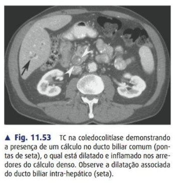

📌 Diagnóstico
Definição: Cálculo(s) no ducto colédoco.
- Secundária (mais comum) — migração da vesícula
- Primária (rara) — formação in situ, marrons, bactérias
⭐ HIGH-YIELD
Coledocolitíase em
10–15% dos pacientes com colelitíase.
Cálculos retidos pós-colecistectomia: ~3%
Apresentação Clínica
Tríade de Charcot
FID = Febre + Icterícia + Dor HCD
Pêntade de Reynolds (colangite grave)
FID + HA = Charcot + Hipotensão + Alteração consciência
→ UTI + drenagem EMERGÊNCIA
Icterícia flutuante = coledocolitíase
Icterícia progressiva = pensar neoplasia
Laboratório
- ↑ Bilirrubina direta
- ↑ FA + GGT (colestase)
- ↑ TGO/TGP (obstrução aguda)
- ↑ Amilase/lipase (pancreatite)
- ↑ TP/INR (colestase prolongada)
Imagem
- USG → 1ª linha (baixa sensibilidade p/ cálculo no colédoco)
- ColangioRM (CPRM) → exame de escolha diagnóstico ≥90% acurácia
- CPER → padrão-ouro terapêutico
- EUS → cálculos pequenos, alto risco cirúrgico

Fig. 11.53 — TC na coledocolitíase: cálculo no ducto biliar comum (pontas de seta), com dilatação a montante e do ducto intra-hepático (seta).
Colangite — Tóquio (TG18)
| Grau | Conduta |
|---|
| I | ATB + CPER eletiva (24–72h) |
| II | ATB + CPER precoce (≤24h) |
| III | UTI + ATB + drenagem emergencial |
🏥 Preparo Op.
Posicionamento:
Decúbito dorsal · Braços em crucifixo · Coxim sob dorso direito · Trendelenburg reverso leve · Rotação mesa para esquerda
Preparo:
- Jejum ≥6h sólidos / 2h líquidos claros
- ATB profilático: Cefazolina 2g EV (30–60 min antes)
- TVP: Heparina SC + meia compressiva
- Sonda vesical (procedimento longo)
- DEGERM + antissepsia com PVPI ou clorexidina alcoólica
⭐ ATB colangite
- Leve/comunitária: Ampicilina-sulbactam ou Ceftriaxona + Metronidazol
- Grave/MDR: Pip-Tazo ou Meropenem
Germes: E. coli · Klebsiella · Enterococcus · Bacteroides · Clostridium
Instrumentação
- Afastador de Balfour / Richardson / Deaver
- Pinça de Babcock, Kelly, Allis
- Bisturi frio lâmina 15
- Tesoura Metzenbaum
- Pinça de Randall (cureta biliar)
- Sonda de Fogarty
- Coledocoscópio (se disponível)
- Dreno de Kehr (T-tube) — tamanho 14–16F
- Cateter para colangiografia + contraste iodado
Estratégia
2 tempos (mais comum no Brasil):
1º CPER → clearance colédoco
2º Colecistectomia laparoscópica (mesma internação ou ≤72h)
1 tempo (rendezvous):
CPER intraop. guiada por fio-guia trans-cístico
evita re-sedação, menos trauma
Exploração laparoscópica (ERLD):
Via transcística (cálculos ≤8 mm) ou coledocotomia laparoscópica (>8 mm / múltiplos)
🔪 Passos Cirúrgicos
🟢 tradução simples: a pedra está dentro do cano. Duas portas: a lateral (coto do cístico, que já vai ser aberto de qualquer jeito) e a da frente (cortar o colédoco). A lateral não deixa cicatriz no cano — por isso tenta-se ela primeiro.
1
acessoPortais + material na sala — coledocoscópio, Dormia, Fogarty, arco em C
por quêMaterial que não está na sala muda a conduta: converte ou manda pra CPRE por falta de recurso, não por indicação.
2
exposiçãoCalot até a CVS — tração cranial do fundo + ínfero-lateral do infundíbulo
por quêVale mais aqui: via dilatada + manipulação = maior risco de tomar o colédoco por cístico. Dilatação é fator de risco, não proteção. ⚠️
3
diagnósticaDuctotomia no cístico + CIO — avaliar intra-hepático, calibre, falhas de enchimento, passagem ao duodeno
por quêResponde duas perguntas: tem cálculo? e a anatomia é a que eu penso? A 2ª evita lesão de via biliar. Sem passagem ao duodeno = cálculo impactado ou estenose ampular.
4
1ª escolhaTRANSCÍSTICA — cálculos
≤6–8 mm, poucos, distais · dilatar → coledocoscópio/Dormia/Fogarty
por quêNão abre o colédoco: sem sutura na via biliar, sem Kehr, sem estenose tardia. O limite é anatômico — cístico fino/tortuoso não deixa passar. 🎯
5
2ª escolhaCOLEDOCOTOMIA —
>8 mm, múltiplos ou falha da transcística ·
longitudinal, anterior, supraduodenal ~1–1,5 cm entre reparos de
Prolene 4-0
por quêLongitudinal porque a irrigação corre às 3 e 9 horas — transversal secciona os dois eixos = estenose isquêmica. Anterior porque atrás estão porta e hepática. Supraduodenal porque abaixo é pâncreas. 🧭
6
verificaçãoConfirmar clareamento — colangiografia/coledocoscopia final
por quêCálculo residual = causa nº1 de reoperação/CPRE. E é agora ou nunca — depois de fechado, só por via endoscópica ou pelo trajeto do Kehr.
7
a decisãoKehr × primário × stent · sutura
absorvível 4-0/5-0
por quêÉ sobre o que acontece se a pressão subir. O Kehr é válvula de escape: bile sai pelo dreno em vez de forçar a sutura. Primário é melhor quando você tem certeza — e pior quando não tem.
E absorvível sempre: fio permanente na bile vira núcleo de cálculo. 🧵
8
conclusãoCompletar a colecistectomia · dreno subhepático se coledocotomia · fechar portais ≥10 mm
por quêA vesícula vem por último porque, ainda presa, é a melhor alça de tração de toda a exploração.
⭐ Dreno de Kehr
Drenagem livre 24–48 h → colangiografia de controle em
7–14 dias → retirar se sem cálculo e com passagem livre.
Retirada precoce (<2–3 sem) = biloma e peritonite biliar — o trajeto fibroso ainda não maturou. ⚠️
✅ 4 checagens
① CVS antes de clipar? ② Transcística tentada antes? ③ Incisão longitudinal, anterior e supraduodenal? ④ Clareamento confirmado antes de fechar?
🚪 Quando NÃO explorar
Colédoco >2 cm com cálculos múltiplos/recidivantes, estenose distal ou litíase primária → coledocoduodenostomia ou coledocojejuno em Y de Roux.
Se o cano entope toda vez, para de desentupir e abre uma saída nova.
⚠️ Mirizzi
Cálculo no infundíbulo comprime externamente o hepático comum → icterícia sem cálculo no colédoco.
Csendes I = compressão externa · II–V = fístula colecistobiliar crescente.
Calot distorcido → limiar baixo para subtotal ou conversão.
🖐️ Instrumentação
✋ MÃO ESQUERDA — Tração e Exposição
- Pinça de Babcock (vesícula/infundíbulo)
- Pinça de Kelly (exposição colédoco)
- Pinça de Allis (pontos de reparo)
- Afastador Richardson / Deaver (fígado)
- Sonda de Fogarty (controle do balão)
- Porta-agulha (auxílio em sutura)
🤚 MÃO DIREITA — Ação e Dissecção
- Bisturi frio n° 15 (coledocotomia)
- Tesoura Metzenbaum (dissecção fina)
- Pinça de Randall (extração de cálculos)
- Porta-agulha (sutura)
- Eletrocautério monopolar (hemostasia)
- Seringa + cateter (colangiografia / lavagem)
Anatomia de Referência
Triângulo de Calot:
Ducto hepático comum (medial) · Ducto cístico (inferior) · Lobo dir. fígado (superior)
→ Contém a artéria cística (identificar antes de clipar!)
Ligamento hepatoduodenal:
VCA — Veia porta (posterior) · Colédoco (direita) · Artéria (esquerda)
Vascularização do colédoco: "3h e 9h"
Sup → a. hepática direita | Inf → a. gastroduodenal
Não esqueletizar! → isquemia → estenose tardia
🧵 Suturas
| Estrutura | Fio |
|---|
| Pontos tração colédoco | Prolene 4-0 ou PDS 4-0 |
| Fechamento primário colédoco | PDS 4-0 (pontos simples) |
| Ao redor do Kehr | PDS 4-0 ou Vicryl 4-0 |
| Ducto cístico (abertura) | Seda 2-0 ou clip metálico |
| Anastomose biliodigestiva | PDS 4-0 (p. separados) |
| Aponeurose | PDS 1 ou Nylon 1 |
| Subcutâneo | Vicryl 2-0 ou 3-0 |
| Pele | Nylon 4-0 / Monocryl intradérmico |
⭐ Regra do PDS
PDS = monofilamento absorvível de longa duração → 1ª escolha para via biliar.
Vicryl = alternativa aceitável.
Pontos separados na via biliar → menor risco de estenose que sutura contínua
⭐ Colédoco-Jejunostomia
Indicações:
R.E.C.
Recidiva · Estenose ampular · Colédoco >2 cm
Técnica: Y-de-Roux, alça ~60 cm, anastomose término-lateral, PDS 4-0 pontos separados
⚡ Complicações
Intraoperatórias
- Lesão de via biliar — 0,1–0,5%; Bismuth-Strasberg A–E
- Lesão art. hepática / v. porta
- Sangramento leito vesicular
- Cálculo residual
Pós-op Precoce
- Fístula biliar (bile pelo dreno >3 dias)
- Colangite pós-procedimento
- Pancreatite pós-CPER (2–5%) ⭐
- Sangramento pós-esfincterotomia
- Perfuração duodenal (CPER)
- Retenção / saída precoce do Kehr → biloma
Tardias
- Estenose biliar (fibrose)
- Coledocolitíase recidivante
- Colangite de repetição
- Cirrose biliar secundária
⭐ Pancreatite pós-CPER
FR: jovem · mulher · disfunção esfíncter de Oddi · múltiplas canulações
Profilaxia: Indometacina retal 100 mg pré-procedimento + Ringer Lactato agressivo
⭐ Lesão de via biliar
Bismuth: I–V (mais usada em aberta)
Strasberg: A–E (inclui laparoscopia)
Tipo E (secção completa) → Y-de-Roux (reconstrução)
🧠 Mnemônicos
Tríade de Charcot
FID — Febre · Icterícia · Dor HCD
Pêntade de Reynolds
FID + HA — Charcot + Hipotensão + Alteração consciência
Segmentos do colédoco
SRRI — Supraduodenal · Retroduodenal · Retropancreático · Intraduodenal
Ligamento hepatoduodenal
VCA — Veia porta (post.) · Colédoco (dir.) · Artéria (esq.)
Colestase laboratorial
FA + GGT + BD ↑
Indicações colédoco-jejunostomia
R.E.C. — Recidiva · Estenose ampular · Colédoco >2 cm
Germes da bile
E.K.E.B.C.
E. coli · Klebsiella · Enterococcus · Bacteroides · Clostridium
Icterícia: coledocolitíase vs neoplasia
Flutuante =
Friedrich (pedra move)
Progressiva =
Progresa (tumor cresce)
Profilaxia pancreatite pós-CPER
INDO + RL
Indometacina retal 100mg + Ringer Lactato agressivo
coledocolitiase_pocket.html · Carol · 2026